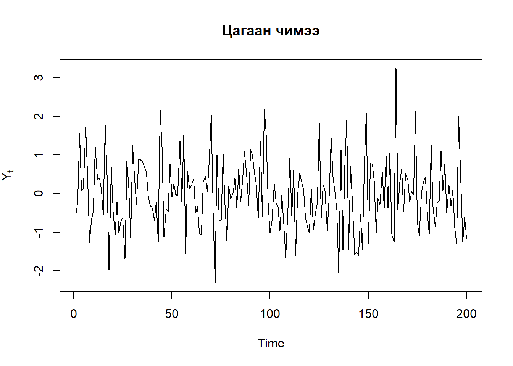
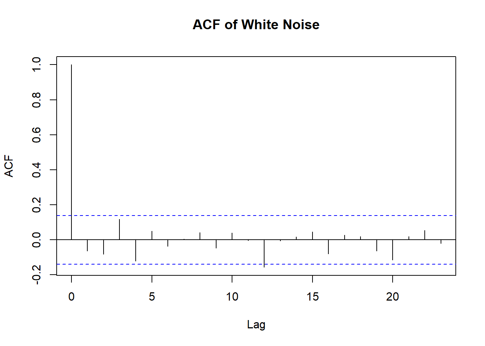
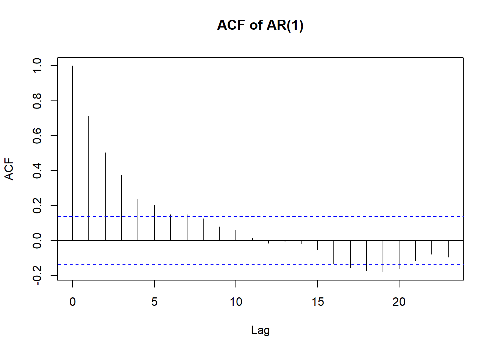
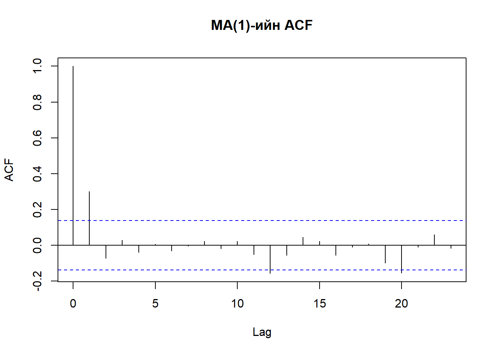
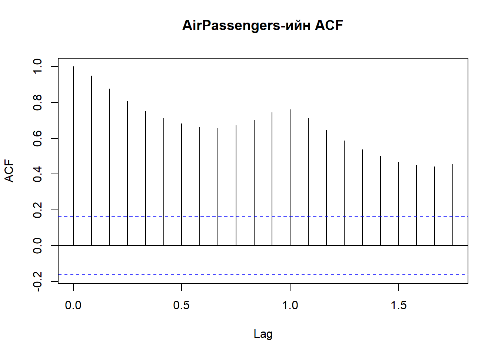

set.seed(123)
wn <- rnorm(200)
plot.ts(
wn,
main = "Цагаан чимээ",
ylab = expression(Y[t])
)
Автокорреляцын функц (ACF) нь өгөгдсөн хоцролтоор тусгаарлагдсан ажиглалтуудын хоорондын хамаарлыг тодорхойлдог.
Хугацааны цувааны хувьд
\[ \{Y_t\}, \]
ACF нь
\[ Y_t \]
ба
\[ Y_{t-k} \]
хоорондын шугаман хамаарлын хүчийг хэмждэг.
ACF нь хугацааны цувааны шинжилгээний хамгийн чухал хэрэгслүүдийн нэг юм.
Үүнийг өргөнөөр ашигладаг:
Сул стационар процессийн хувьд
\[ \gamma(k) = Cov(Y_t,Y_{t-k}) \]
-ийг автоковариацын функц гэнэ.
Учир нь
\[ Cov(Y_t,Y_{t-k}) = E[(Y_t-\mu)(Y_{t-k}-\mu)], \]
автоковариац нь (k) хоцролтоор тусгаарлагдсан ажиглалтуудын хоорондын хамаарлыг хэмждэг.
\[ \gamma(0)=Var(Y_t) \]
ба
\[ \gamma(k)=\gamma(-k). \]
Иймд автоковариацын функц нь тэгш хэмтэй.
Автокорреляцын функц нь
\[ \rho(k) = \frac{\gamma(k)} {\gamma(0)}. \]
Учир нь
\[ \gamma(0)=Var(Y_t), \]
ACF нь ковариацыг стандартчилдаг.
Иймд
\[ -1 \le \rho(k) \le 1. \]
Тэг хоцролт дээр
\[ \rho(0)=1. \]
1-д ойрхон утга нь хүчтэй эерэг хамаарлыг илтгэнэ.
-1-д ойрхон утга нь хүчтэй сөрөг хамаарлыг илтгэнэ.
0-д ойрхон утга нь бага шугаман хамаарлыг илтгэнэ.
Практикт онолын автокорреляц нь тодорхойгүй байдаг.
(k) хоцролт дээрх түүврийн автокорреляц нь
\[ r_k = \frac{ \sum_{t=k+1}^{n} (Y_t-\bar Y) (Y_{t-k}-\bar Y) } { \sum_{t=1}^{n} (Y_t-\bar Y)^2 }. \]
Түүврийн автокорреляцуудын цуглуулгыг коррелограмм гэж үзүүлдэг.
Цагаан чимээний процессыг авч үзье:
\[ Y_t \sim WN(0,\sigma^2). \]
Түүний автокорреляцын функц нь
\[ \rho(0)=1, \]
ба
\[ \rho(k)=0, \qquad k\ne0. \]
set.seed(123)
wn <- rnorm(200)
plot.ts(
wn,
main = "Цагаан чимээ",
ylab = expression(Y[t])
)
acf(
wn,
main = "Цагаан чимээний ACF"
)
Түүврийн автокорреляцууд тэг орчимд санамсаргүйгээр хэлбэлздэг.
Дараахьыг авч үзье:
\[ Y_t=\phi Y_{t-1}+\varepsilon_t, \]
энд
\[ |\phi|<1. \]
AR(1) процессын хувьд
\[ \rho(k)=\phi^k. \]
Иймд ACF нь геометрээр буурдаг.
set.seed(123)
ar1 <- arima.sim(
model=list(ar=.8),
n=200
)
acf(
ar1,
main="AR(1)-ийн ACF"
)
Хоцролт нэмэгдэх тусам автокорреляцууд аажмаар буурдаг.
Дараахьыг авч үзье:
\[ Y_t=\varepsilon_t+\theta\varepsilon_{t-1}. \]
Автокорреляцын функц нь
\[ \rho(1) = \frac{\theta} {1+\theta^2} \]
ба
\[ \rho(k)=0, \qquad k>1. \]
Иймд ACF нь 1 хоцролтын дараа тасардаг.
set.seed(123)
ma1 <- arima.sim(
model=list(ma=.5),
n=200
)
acf(
ma1,
main="MA(1)-ийн ACF"
)
Зөвхөн эхний хоцролт нь ихэвчлэн ач холбогдолтой байдаг.
Цагаан чимээний процессын хувьд
\[ SE(r_k) \approx \frac{1}{\sqrt n}. \]
Ойролцоогоор 95% хязгаарууд нь
\[ \pm \frac{1.96}{\sqrt n}. \]
Жишээлбэл, хэрэв
\[ n=200, \]
бол
\[ \pm\frac{1.96}{\sqrt{200}} \approx \pm0.139. \]
Эдгээр хязгаараас гадуур байгаа баганууд нь ач холбогдолтой автокорреляцыг илтгэж болно.
data(AirPassengers)
acf(
AirPassengers,
main="AirPassengers-ийн ACF"
)
Хүчтэй үргэлжлэл ба улирлын байдлыг ажиглаарай.